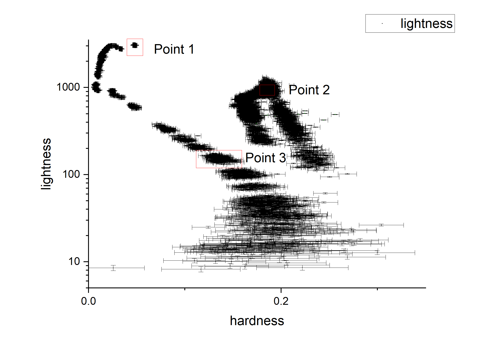
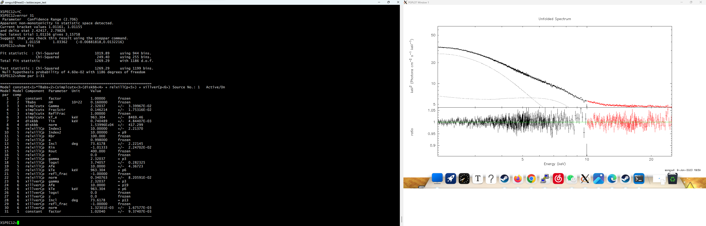
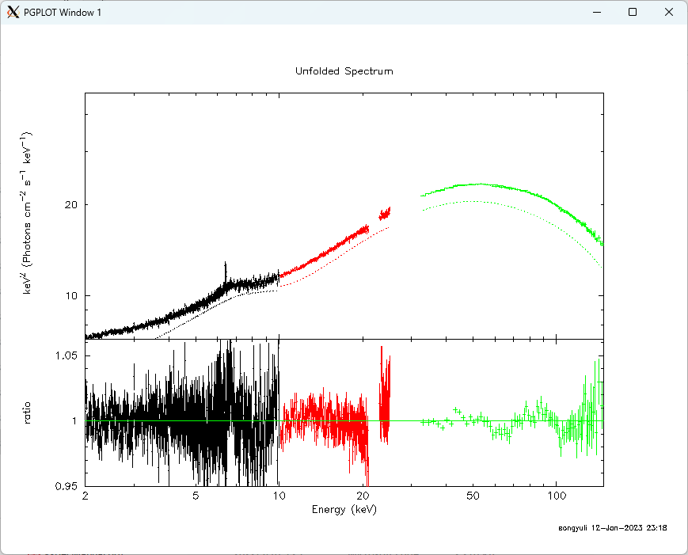
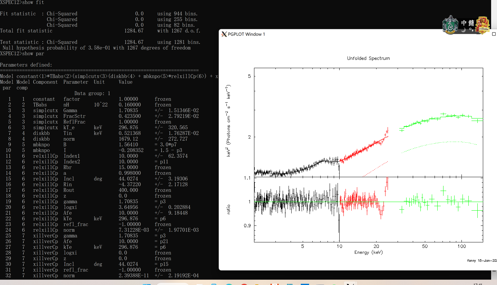

The results and the problems in fitting the spectrum of the maxi1820+70
Fitting points
We chose three typical points from the HID graph.

The first point
The first point is the observation is the three observation in P14661084 and we use the low energy and mid energy part of the spectrum.
We combine the spectra in P14661084 and use the model constant*TBabs*(simplcutx*(diskbb+relxillCp)+xillverCp)(The reason why I didn’t use the model mbknpo is that if I add this model, then the spectrum of the very low energy(about 2keV) may not fit well), and I got the best-fit like this.

Also, we calculate the error of each parameter, and got the table below
| par | model | par name | value | range |
|---|---|---|---|---|
| 3 | simplcutx |
Gamma |
2.32037 | 2.29367~2.34282 |
| 4 | simplcutx |
FracSctr |
0.146214 | 0.139002~0.153343 |
| 6 | simplcutx |
kT_e |
963.399 | 151.681~0(-811.624,-963.304) |
| 7 | diskbb |
Tin |
0.740488 | 0.737991~0.742486(-0.00249779,0.00199709) |
| 8 | diskbb |
norm |
1.53996E4 | 15170.5~15622(-229.123,222.451) |
| 9 | relxillCp |
Index1 |
10.00000 | 9.20764~0(-0.792358,-10) |
| 13 | relxillCp |
Incl |
73.6178 | 72.3889~73.842(-1.22892,0.224224) |
| 14 | relxillCp |
Rin |
-1.01333 | -1.03082~-1.00407(-0.0174862,0.00926662) |
| 18 | relxillCp |
logxi |
3.74057 | 3.61639~3.8515(-0.124187,0.110924) |
| 19 | relxillCp |
Afe |
10.0000 | 9.32562~0(-0.67438,-10) |
| 22 | relxillCp |
norm |
0.340764 | 0.29189~0.352971(-0.0488737,0.0122078) |
| 30 | xillverCp |
norm |
1.3216E-3 | 0~0.00371015(-0.00132301,0.00238714) |
| 31 | constant(2) |
factor |
1.02040 | 1.01158~1.03362(-0.00881818,0.0132216) |
The second point
The second point is the three observation in ``, we used all the energy part of the spectrum.
Also, we used the model constant*TBabs*(simplcutx*(diskbb+relxillCp)+xillverCp)to fit the spectrum. And ignored the spectrum between 21keV to 23keV. This time, however, we found that the model cannot fit the spectrum very well, especially at about Fe-line and at about 25 keV.
The unfolded spectrum and the ratio is like below:

We calculated the error of each parameter, and got the table below:
| par | model | par name | value | range |
|---|---|---|---|---|
| 3 | simplcutx |
Gamma |
1.55434 | 1.54259~1.56467(-0.0117559,0.0103268) |
| 4 | simplcutx |
FracSctr |
0.204196 | 0.187275~0.21611(-0.016921,0.0119141) |
| 6 | simplcutx |
kT_e |
50.2392 | 49.7608 ~52.4421(-0.47835,2.20294) |
| 7 | diskbb |
Tin |
0.530084 | 0.519304~0.546117(-0.0107803,0.0160332) |
| 8 | diskbb |
norm |
14927.14 | 4290.33~5755.6(-636.818,828.452) |
| 9 | relxillCp |
Index1 |
10.00000 | 3.70664~0(-6.29336,-10) |
| 13 | relxillCp |
Incl |
41.5373 | 38.802~-9.07362(-2.73533,4.29916) |
| 14 | relxillCp |
Rin |
-14.5510 | -18.111~-1.00407(-3.56002,5.47737) |
| 18 | relxillCp |
logxi |
4.40865 | 4.35113~4.44465(-0.057525,0.0360025) |
| 19 | relxillCp |
Afe |
9.29539 | 7.81846~0(-1.47693,-9.29539) |
| 22 | relxillCp |
norm |
8.8196E-2 | 0.0847278~ 0.0938056(-0.0034684,0.00560941) |
| 30 | xillverCp |
norm |
5.4875E-3 | 0.00463134~0.00628511(-0.000856129,0.000797643) |
| 31 | constant(2) |
factor |
1.03591 | 1.02896~1.04286(-0.00695636,0.00694697) |
| 61 | constant(2) |
factor |
1.05928 | 1.05126~1.06678(-0.00801573,0.00750175) |
I noticed that the range of the parameter Rin is quite large, which may be related to the unfitted Fe-line.
The third point
The second point is the two observation in P0114661136, we used all the energy part of the spectrum.
We use the model constant*TBabs*(simplcutx*(diskbb+mbnkpo*relxillCp)+xillverCp) to fit the spectrum. And ignored the spectrum between 21keV to 23keV. This time except the problem at about 20keV and 25keV, the model can fit the spectrum quite well.
The unfolded spectrum and the ratio is like below:
We calculated the error of each parameter, and got the table below:
| par | model | par name | value | range |
| —— | ——————- | ————— | ————- | ———————————————————————- |
| 3 | simplcutx | Gamma | 1.70835 |1.69696~1.71736(-0.0113903,0.00900463)|
| 4 | simplcutx | FracSctr | 0.423500 |0.388402~0.452862 (-0.0350982,0.0293619)|
| 6 | simplcutx | kT_e | 296.876 |156.831~0(-140.045,-296.876)|
| 7 | diskbb | Tin | 0.521368 | 0.499858~0.547507(-0.0215105,0.0261386) |
| 8 | diskbb | norm | 1679.12 | 1315.87~2075.26(-363.28,396.115) |
| 11 | relxillCp | Index1 | 10.00000 |4.04933~0 (-5.95067,-10) |
| 15 | relxillCp | Incl | 44.0274 |41.2731~48.205 (-2.75424,4.17761) |
| 16 | relxillCp | Rin | -4.37220 |-5.43035 ~-3.03198 (-1.05815,1.34022) |
| 20 | relxillCp | logxi | 3.64956 |3.48269~3.80451(-0.166872,0.154944) |
| 21 | relxillCp | Afe | 10.0000 | 7.14676~0 (-2.85324,-10) |
| 24 | relxillCp | norm | 07.31228E-3 | 0.0061945~0.00893408(-0.00111789,0.00162169) |
| 32 | xillverCp | norm | 2.39388E-11 | 0~0.000333344(-6.82725e-15,0.000333344) |
| 33 | constant(2) | factor | 1.00827 |0.985256~1.02789 (-0.0230121,0.0196176) |
|65|constant(3) | factor | 1.03501 | 1.00417~1.06166(-0.0308423,0.0266517) |